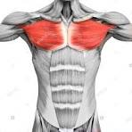

Anatomie des Muscles : Guide pour le Dessin
Table des Matières
- Introduction
- Muscles du Haut du Corps
- Pectoraux
- Biceps
- Triceps
- Deltoides
- Trapezes
- Muscles du Bas du Corps
- Abdominaux
- Quadriceps
- Ischio-jambiers
- Mollets
- Muscles du Dos
- Grand Dorsal
- Rhomboides
- Conclusion
- Ressources Supplementaires
Introduction
Dans l'art du dessin, maîtriser l'anatomie des muscles est crucial pour rendre des personnages réalistes et expressifs. Ce guide va explorer les muscles principaux du corps humain et leur rôle, avec des exemples imagés pour illustrer leur position et leur fonction.
Note : Un bon dessinateur doit comprendre non seulement l'emplacement des muscles, mais aussi comment ils réagissent lors du mouvement.
Muscles du Haut du Corps
Pectoraux
- Nom complet : Pectoralis Major
- Fonction : Adduction et rotation interne du bras.
- Emplacement : Partie avant de la poitrine, reliant le sternum et l'humérus.

Astuce pour le dessin : Les pectoraux s'étirent et changent de forme lorsque les bras sont élevés.
Biceps
| Nom | Fonction | Emplacement |
|---|---|---|
| Biceps Brachii | Flexion du coude, rotation de l'avant-bras | Partie avant supérieure du bras |

Triceps
Les triceps brachiaux sont des muscles à trois chefs situés à l'arrière du bras. Leur principale fonction est l'extension du coude.
- Chefs :
- Long chef
- Chef latéral
- Chef médial
À retenir : Les triceps sont essentiels pour montrer la puissance lors des poses où les bras sont tendus.
Deltoides
Les deltoïdes sont les muscles arrondis de l'épaule, répartis en trois faisceaux. Ils permettent différents mouvements de l'épaule.
- Faisceau antérieur (avant) : Levée du bras vers l'avant.
- Faisceau latéral (milieu) : Abduction du bras.
- Faisceau postérieur (arrière) : Extension du bras vers l'arrière.
Trapezes
Le trapèze est un large muscle en forme de losange s'étendant de la nuque au milieu du dos.
- Fonction : Stabilisation des omoplates et mouvements de la tête et du cou.
- Emplacement : Partie supérieure du dos.
| Fonction principale | Mouvement associé |
|---|---|
| Élever les omoplates | Haussement d'épaules |
| Abaisser les omoplates | Mouvements descendants des bras |

Muscles du Bas du Corps
Abdominaux
Les abdominaux, en particulier le grand droit de l'abdomen, sont un groupe de muscles situés à l'avant du torse. Ils jouent un rôle important dans la flexion de la colonne vertébrale et la stabilisation du tronc.
- Parties principales :
- Grand droit : Les fameuses "tablettes de chocolat".
- Obliques : Muscles latéraux responsables de la rotation du tronc.

Quadriceps
Les quadriceps sont un groupe de quatre muscles situés à l'avant de la cuisse. Ils permettent l'extension du genou.
- Muscles du quadriceps :
- Droit fémoral
- Vaste latéral
- Vaste intermédiaire
- Vaste médial
Ischio-jambiers
Les ischio-jambiers se trouvent à l'arrière de la cuisse et sont responsables de la flexion du genou.
- Fonction : Permet de plier la jambe à partir du genou.
- Emplacement : De l'os de la hanche à l'arrière du genou.

Mollets
Les mollets sont composés de deux principaux muscles :
- Gastrocnémien : Permet la flexion plantaire du pied.
- Soléaire : Soutient le gastrocnémien lors de la marche.

Muscles du Dos
Grand Dorsal
Le grand dorsal est un muscle large et plat qui recouvre la partie inférieure du dos. Il est principalement responsable des mouvements de tirage vers l'arrière.
- Fonction : Adduction, extension et rotation interne du bras.
- Emplacement : Partie inférieure et latérale du dos.
Rhomboides
Les rhomboïdes sont situés entre les omoplates et la colonne vertébrale.
- Fonction : Rétraction et stabilisation des omoplates.
- Emplacement : Entre la colonne thoracique et les omoplates.

Conclusion
L'anatomie des muscles est essentielle pour le dessin réaliste du corps humain. Comprendre comment les muscles se contractent, se détendent et influencent la forme du corps permet de mieux représenter les poses et les mouvements.
Citation à retenir : "Un bon dessin est une fusion de connaissance anatomique et d'observation attentive." – Léonard de Vinci
Ressources Supplementaires
- Anatomie pour Artistes - Proko
- Human Anatomy for Artists - Eliot Goldfinger
- Drawings of Anatomy on Pinterest
- Alamy ./images